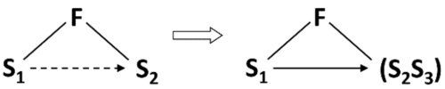
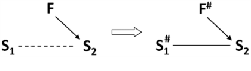

Standard inventive solutions (SIS)
If there is an object that is not easy to change as required, and the conditions do not contain any limitations on introducing substances and fields, solve the problem by synthesizing an SIS, i.e., by introducing the missing element(s).

If there is a Su-Field that is difficult to be changed, and there are no restrictions on introducing additives into the available substances, the problem is being solved by transition to the internal complex Su-Field, i.e., by introducing an internal additive to S1 or S2. That increases the controllability or adds the necessary properties to the Su-Field. The additive can be added permanently or temporarily.

S1 is a product, S2 is a tool, S3 is an additive. Brackets denote an inner compound bond (an outer compound bond is denoted without brackets).
If there is a Su-Field that is difficult to be changed, and there are no restrictions on introducing additives into the available substances, the problem is being solved by transition to the external complex Su-Field, i.e., by introducing an external additive to S1 or S2. That increases the controllability or adds the necessary properties to the Su-Field. The additive can be added permanently or temporarily.

If there is a Su-Field that is difficult to be changed, and there are no restrictions on introducing additives into the available substances, the problem is being solved by introducing an additive that is a part of the environment or the supersystem.
If the external environment does not contain ready substances required to synthesize a Su-Field, these substances can be obtained by replacing the external environment with another one, or by decomposing the environment, or by introducing additives into the environment.
If a minimal (measured, optimal) effect of action is required, but it is difficult or impossible to provide it under the conditions of the problem, use a maximal action (either of a field or a substance) while the excess is then removed. Substance excess is removed by a field, while field excess is removed by a substance. The excess is shown by a double line.
If a maximal effect of action on a substance is required and this is not allowed, the maximal action has to be preserved but directed to another substance attached to the first one.

If a selectively maximal action is required (maximal in certain zones, while maintaining the minimal in other zones), the field should be maximal, but:
1.1.8.1. Selectively maximal mode: maximal field
In the first case, we introduce a protective substance where it is necessary to maintain minimal action.
1.1.8.2. Selectively maximal mode: minimal field
In the second case, while having the minimal mode, we selectively introduce substances that locally generate an additional field, for example, thermit compaunds – for thermal action, explosive compaunds for mechanical action.
If useful and harmful actions appear between two substances in a substance-field system and there is no need to maintain a direct contact between the substances, solve the problem by introducing a third substance between them. The substance should be free or sufficiently cheap.
The wavy arrow indicates an action that has to be eliminated.
If there are useful and harmful actions between two substances, and there is no need to maintain direct contact between the substances, and it is forbidden or inconvenient to use foreign substances, solve the problem by introducing a third substance between the two. In this case, the third substance is to be a modification of the first or second substances.
Note: S3 can be introduced into the system as a ready substance from the supersystem or it can be obtained (by the action of F1 or F2) from S1 or S2. In particular, S3 can be a „void”, bubbles, foam, etc.
If it is necessary to eliminate the harmful action of a field upon a substance, the problem can be solved by introducing a second substance that draws off upon itself the harmful effect of the field.

If useful and harmful action appear between two substances in a Su-Field, and a direct contact between the substances must be maintained, the problem can be solved by transitioning to a dual substance-field system — the useful effect is provided by the existing field while a new counteracting field neutralizes the harmful action (or transforms the harmful action into a useful action).

If it is necessary to destroy a Su-Field with a magnetic field, the problem is solved by using physical effects that are capable of “switching off” ferromagnetic properties of substances (e.g., by de-magnetizing by a mechanical impact or by heating above the Curie point).

If it is necessary to increase the efficiency of the Su-Field, the problem can be solved by transforming S1 or S2 into an independently controlled Su-Field, thus creating a chain Su-Field.
S3 or S4 can be transformed into another independently controlled Su-Field.

If the Su-Field is insufficient and the replacement of its elements is unacceptable, the problem can be solved by introducing a second field, hence constructing a double Su-Field that has higher efficiency.

An efficiency of Su-Field can be increased by replacing the uncontrolled (or poorly controlled) field with a controlled (well-controlled) field, e.g., replacing the gravity field with a mechanical, mechanical-electric, etc.
An efficiency of Su-Field can be improved by increasing the degree of segmentation of S1 or S2.

Note:
- The symbol Sm denotes a substance segmented into many small particles (grains of sand, powder, granules, etc.).
- SIS 2.2.1 reflects one of the sub-trends of TESE, i.e, the segmentation of components.
A special case of substances segmentation is the transition from solids to capillary-porous substances. This transition is performed along the following line:

monolith substance
substance with one cavity
monolith with many cavities (perforated substance)
capillary-porous substance
capillary-porous substance with a certain pore structure (and size)
With the development of this line, the possibility of introducing a liquid substance into cavities-pores and using physical effects increases.

Efficiency of a Su-Field can be improved by increasing the degree of its dynamization, i.e., by transitioning to a more flexible, rapidly changing structure of the system.

Note: A triangular symbol with a wavy line represents a dynamic Su-Field that changes during its operation.
The dynamization of S2 usually start with introducing a hinge. Further dynamization runs along the line: one hinge -> many hinges -> flexible substance.
The dynamization of F usuall transition from the constant F to pulsating F.
Efficiency of Su-Field can be increased by transitioning from homogeneous or unstructured field to inhomogeneous field or a field with a special structure (constant or variable in time and space).

Note: The # symbol next to the letter F denotes that the field has a special structure variable in time and space.
If a substance that is a part of the Su-Field or can be a part of the Su-Field mut have a specific spatial structure, the process should be performed in a field that has a structure corresponding to the required structure of the substance.

Efficiency of Su-Field can be increased by transitioning from homogeneous or unstructured substance to inhomogeneous substance or a substance with a special structure (constant or variable in time and space).
Note: The # symbol next to the letter S denotes that the substance has a special structure variable in time and space.
If it is necessary to obtain an intensive thermal effect in the certain places of the system (points, lines), exothermic substances should be introduced in these places beforehand.
Efficiency of Su-Field can be improved by using a ferromagnetic Substance (as one piece) and a magnetic Field.

Note: This is the SIS that uses ferromagnetic Substance that is not segmented. We talk about the Proto-Fe-Field and other intermediate states.
This SIS is applicable not only for simple Su-Fields but also to complex (with an additive), as well as for Su-Fields where the additive is a part of the environment.
Efficiency of Su-Field can be improved by transition from Su-Field or Proto-Fe-Field to Fe-Field by replacing one of the substances with ferro-particles (or adding ferro-particles like chips, granules, grains, etc.) and using a magnetic or an electromagnetic field.
The controlability grows with the increase of the degree of the ferro-particles fragmentation, so the development of Fe-Fields follows the line:

granules
powder
finely dispersed ferro-particles
The controlability also grows with the increase in the degree of fragmentation of the substance into which the ferro-particles are introduced. The development follows the line:
 monolith substance
monolith substance
grains
powder
liquid
Note:
Transition to Fe-Field can be considered a joint application for two SIS – 2.4.1 (Transition to Proto-Fe-Field) and 2.2.2 (Segmentation of the substance).
Having turned into Fe-Field, the Su-Field repeats the development cycle, however, at a new level, since Fe-Fields can be characterized by high controllability and efficiency. The SISs of sub-class 2.4 can be considered as types of „isotopes” of SISs of sub-classes 2.1-2.3. Singling out Fe-Fields into their own sub-class is justified (at least at this stage of SIS development) by the exceptional practical significance of Fe-Fields. Additionally, Fe-Fields are more precise research tool for studying rougher Su-Fields and predicting their development.
Efficiency of Fe-Field can be improved by the use of ferromagnetic fluids – colloidal ferro-particles suspended in kerosene, silicone, or water. SIS 2.4.3 can be seen as a last point in the development according to SIS 2.4.2.
Efficiency of Fe-Fields can be improved by using a capillary-porous structure that is characteristic for many Fe-Fields.
If it is necessary to increase a controllability of the system by transition to Fe-Field, and the replacement of substances by ferro-particles is unacceptable, the transition is performed by introducing additives to one of the substances, hence creating an internal or external complex Fe-Field.

If it is necessary to increase a controllability of the system by transition from Su-Field to Fe-Field, and replacing the substance with ferro-particles (or adding additives to the substance) is unacceptable, then the ferro-particles should be introduced into the external environment and control the system by the magnetic field, hence changing the environment parameters (SIS 2.4.3).
Electrorheological fluids controlled by electric fields can also be used as an external environment.
It is possible to controll Fe-Fields using physical effects.
Efficiency of Fe-Field can be improved by increasing the degree of its dimization, i.e., by transitioning to a more flexible, rapidly changing structure of the system.

Efficiency of Fe-Field can be increased by transitioning from homogeneous field to inhomogeneous one or from an unstructured field or a field with a special structure (constant or variable in time and space).

Efficiency of Proto-Fe-Field and Fe-Field can be improved by coordinating rythms of its elements.
If the introduction of ferromagnets or magnetization of substances is difficult, the interaction of an external electromagnetic field with the direct contact, or induced currents, or the interaction of these currents with each other should be used.
Note:
- If Fe-Fields are SISs with ferromagnetic particles, then E-Fields are SISs with currents or interacting currents instead of ferromagnetic particles.
- Development of E-Field – similar to Fe-Fields – repeats the general line of Su-Field evolution:

simple E-Field
complex E- Field
E-Field based on an external environment
dynamization
segmentation/structurization
rhythm coordination
A special type of E-Fields are Su-Fields with electro-rheological suspension (fine non-conducting but electrically active particles), with controlled viscosity. If the ferromagnetic fluids cannot be used, the electro-rheological suspension can be applied.
At any stage of the development, efficiency of Su-Field can be increased by the integration of the system with another system (or systems) into a more sophisticated bi-system or a poly-system (system transition 1a).
Increasing the efficiency of the synthesized bi-systems and poly-systems can be achieved primarily through the development of links between elements of Su-Field.
The newly developed bi-systems and poly-systems often have „no links”, that is, they are just a „pile” of components. The development is aimed at strengthening linking. On the other hand, elements in newly created systems are sometimes connected by rigid links. In these cases, the development is aimed at increasing the degree of dynamization of links.
no links
rigid link
flexible link
field link
The efficiency of bi-systems and poly-systems increases with an increase in the difference between the elements of Su-Field (system transition 1b):
identical elements
elements with shifted characteristics
different elements
inverse combinations of the „element and anti-element”
Efficiency of bi-systems and poly-systems can be improved by Trimming. Completely trimmed bi-systems and poly-systems become monosystems again. The cycle can be repeated.
Efficiency of bi-systems and poly-systems can be improved by distributing opposite properties in the system and among its parts. A two-level system is used in which the entire system has property C, and its parts (particles) have property anti-C (system transition 1c).
If a non-Su-Field is difficult to detect or measure, the problem can be solved by creating a simple or double Su-Field with an output field.
If the system (or part of it) is difficult to detect or measure, the problem can be solved by transition to the internal or external complex Su-Field, by introducing easily detectable additives (marks).

If the system is difficult to detect or measure at some point in time and it is impossible to introduce additives which create an easily detectable and easily measured field, these additives should be introduced into the external environment so that the change in the state of the system can be assessed.

If it is impossible to introduce the additives into the external environment (according to SIS 4.2.3), these additives can be obtained by using the resources of the environment, e.g., by decomposing it or changing its physical state (for example, gas or vapor bubbles obtained by electrolysis, cavitation, or other methods).
The efficiency of detecting or measuring the Su-Field can be improved by using physical effects.
If changes in the system cannot be detected or measured directly and it is impossible to pass the field through the system, the problem can be solved by inducing resonance oscillations in the whole system or a part of it. Changing the oscillations frequency can help to identify changes in the system.

If it is not possible to apply SIS 4.3.2, the system condition can be assessed using the change of the natural frequency of an object (in the external environment) integrated with the controlled system.
Su-Fields with non-magnetic fields tend to transform into Proto-Fe-Fields, that is, Su-Fields with a magnetic substance and a magnetic field.
If it is necessary to increase the efficiency of detection or measurement by Proto-Fe-Field or Su-Field, it is necessary to go to Fe-Field. One of the substances can be replaced with ferromagnetic particles or the ferromagnetic additives can be used, then the magnetic field can be detected or measured.

If it is necessary to increase the efficiency of detection or measurement of the system by transition to Fe-Field, and replacing substances with ferromagnetic particles is impossible, then the complex Fe-Field should be created by introducing additives to the substance.
If it is necessary to increase the efficiency of detection or measurement of the system by transition from Su-Field to Fe-Field, and the introduction of ferromagnetic particles is impossible, then the ferromagnetic particles should be introduced into the external environment.
If it is necessary to increase the efficiency of detection or measurement of the system, the scientific effects should be used, for example the Curie point, Hopkinson or Barkhausen effects, magnetoelastic effect, etc.
At any stage of development, the effectiveness of the measurment Su-Field can be increased by transition to a bi-system or a poly-system.
Measurment Su-Fields are developing in the floowing direction:
function measurement
measurement of the first derivative of the function
measurement of the second derivative of the function